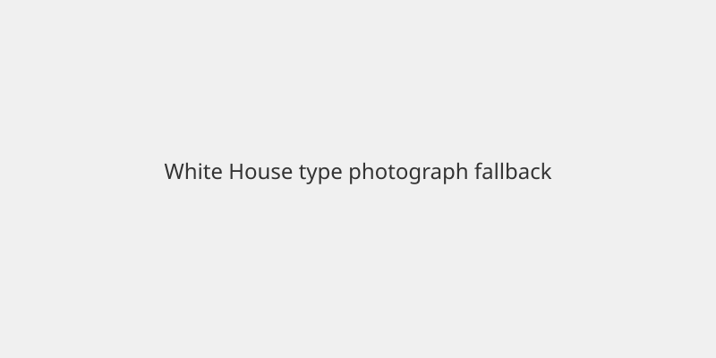

United States · Politics · 9 November 2026
Trump tells 60 Minutes his deportation policy “might have been too tough” after midterm losses

What is agreed across desks
President Donald Trump sat for a 60 Minutes interview that aired on 8 November 2026. In it he stated that his administration’s deportation policy “might have been too tough” and that the approach “hurt” Republicans in the midterm elections. He praised the closure of the southern border and the removal of people he described as serious criminals, while saying that deportations of employed long-term residents who had entered illegally had cost political support. He indicated willingness to negotiate some form of status for certain undocumented workers with the incoming Democratic majorities in Congress. The interview was recorded on 6 November, the same day he announced that Stephen Miller would become White House chief of staff effective 9 November. Democratic gains that produced majorities in both chambers are reported by multiple outlets on the basis of official returns and exit polls.
What is only a quote
Trump’s assessment that the policy was “too tough” is his own characterization. His claim that Democrats have already contacted him about a deal is his statement. The precise terms of any future legislative compromise are not specified in the interview beyond general references to people who have been in the country 10 or 15 years, are working, and in some cases pay taxes. Whether the staffing change to Miller signals continuity or a shift is an interpretation offered by commentators, not a fact established by the interview itself.
Mechanism and context
Immigration enforcement has been a central feature of Trump’s three presidential campaigns. After taking office in 2025 the administration expanded interior enforcement and increased removals. Exit polling after the 3 November 2026 midterms showed substantial voter concern about the scope of those removals, particularly among Latino voters in several states. The 60 Minutes conversation is the first extended on-camera discussion by the president of those results. Any immigration legislation would require passage by the House and Senate and the president’s signature; the current lame-duck session has limited time before the new Congress is seated in January.
What the story is not
The interview does not constitute a formal policy change or executive order. It does not announce a specific bill or numbers of people who would receive status. It does not establish that immigration was the sole or primary cause of the midterm outcome; other factors cited by the president and by Vice President JD Vance include the Iran conflict and cost-of-living concerns.

Source articles and scores
| Outlet | Headline | T | N | C |
|---|---|---|---|---|
| CBS News | 10 takeaways from Trump's 60 Minutes interview | 94 | 0 | 98 |
| The Guardian | Trump admits deportation policy was ‘too tough’ | 92 | -8 | 95 |
| USA Today | 'Too tough': Trump floats immigration deal | 93 | -5 | 96 |